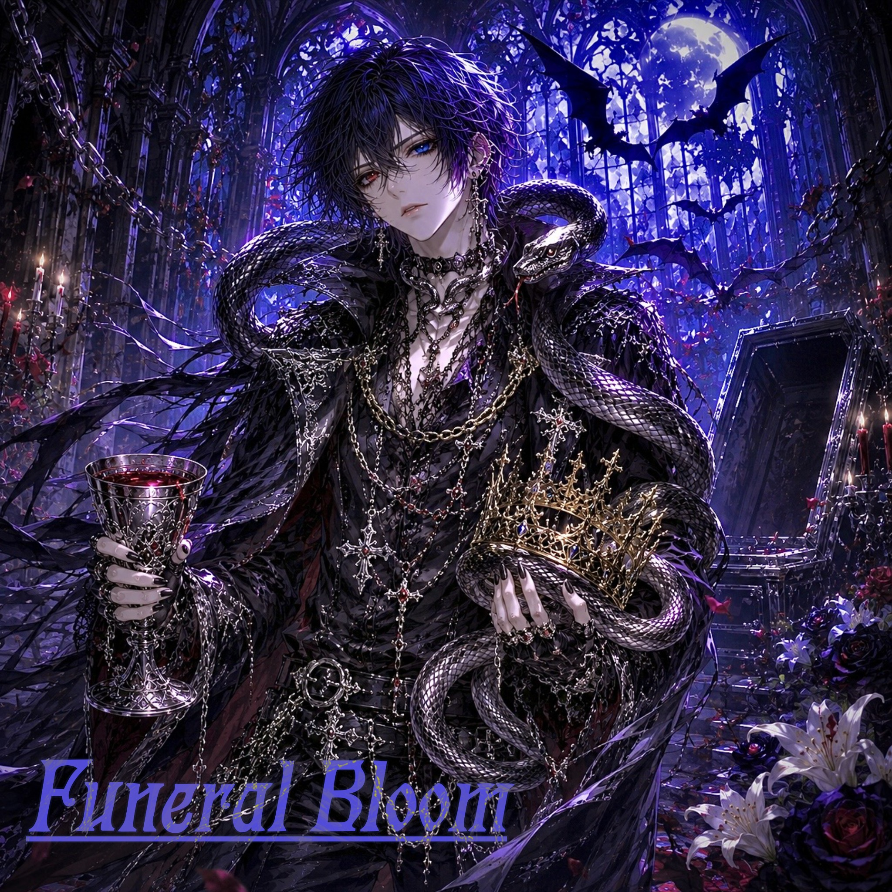
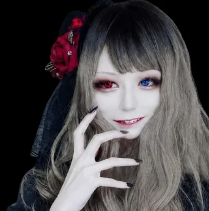

2026.10.17KOSHIKURO RITA — OFFICIAL GALLERY
越黒リタWhere silence blooms into a dark melody.
夜に咲く、気高く繊細な黒薔薇の姫。
音楽、物語、装飾――越黒リタの世界へ。
LATEST EXHIBITION
New Release
いま、この世界で咲いている最新作。
MUSIC
アルバム、楽曲、歌詞。そのすべてを辿る。
02GALLERY
イラストとビジュアルを収蔵する展示室。
03WORLD
CROVEIL、Instrument Persona、人物設定。
04COMICS
世界の余白を描く、もうひとつの物語。
A CURATED GALLERY
GALLERY
ひとつの作品と、静かに巡り合うための展示。ジャケットに触れると、その世界がひらきます。
ARCHIVE HALL
DISCOGRAPHY
黒の収蔵庫に眠る、すべての作品。検索や並び替えで、その軌跡を辿れます。
越黒リタ
CROVEIL
THE WORLD BEHIND
World
越黒リタ、CROVEIL、そして楽器から生まれたInstrument Persona。楽曲の外側まで続く世界を、人物・イラスト・コミックから辿る。
THE CREATOR OF THIS WORLD
越黒リタ

美しく儚い闇を描く、音楽と物語の創作プロジェクト。
ゴシック、バロック、シンフォニック、電子音。異なる質感をひとつの世界観に束ね、楽曲、歌詞、ビジュアル、物語として残していく。
SUPPORT THIS WORLD
この世界を、もう少しだけ続けるために。
作品はこれまで通り自由に楽しめるまま。活動を応援できる入口は、ここから少しずつ整えていきます。